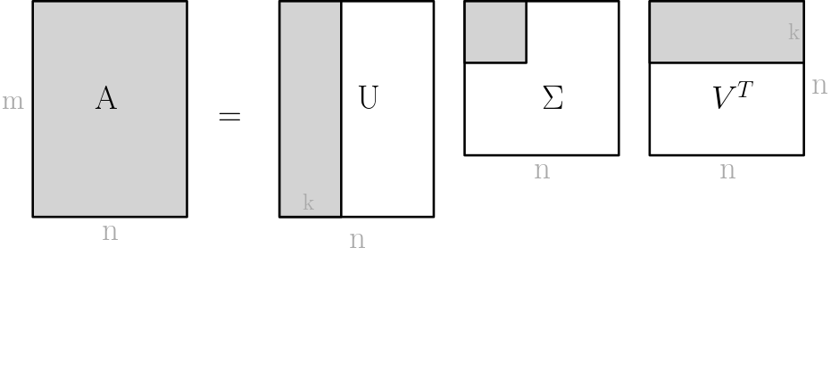

Short Explanation
An image can be represented with a matrix with each pixel value corresponding to an entry.
We can then compute a singular value decomposition (svd) of this matrix A = UΣV
T.
If we only keep the first k columns of U and the first k columns of V
T, we approximate the matrix A (displayed in gray below).
Since the values in Σ are sorted by size, we only discard the rows with a small value, thus not loosing too much information. This can be seen in the image above. If we discard
half the entries the image is still recognisable. (Note: the effectiveness depends on the image)
